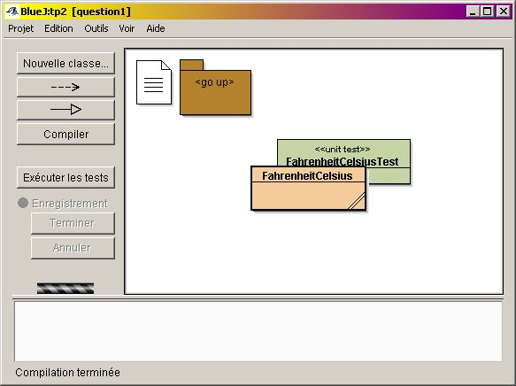
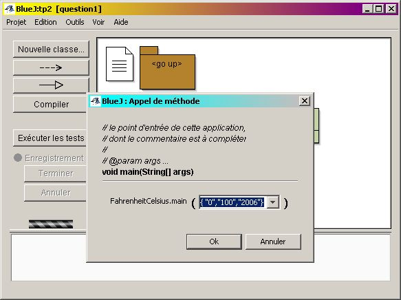
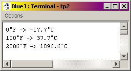
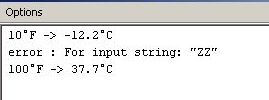
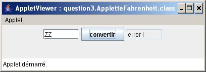
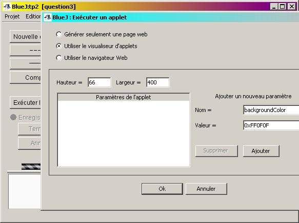

.1
Développez une application Java de conversion
des degrés Fahrenheit en degrés Celsius.
.1
Développez une application Java de conversion
des degrés Fahrenheit en degrés Celsius.
TP0
|
|
.1
Développez une application Java de conversion
des degrés Fahrenheit en degrés Celsius.
La classe effectuant la conversion se nomme FahrenheitClesius, vous compléterez les 2 méthodes de celle-ci

Contraintes :
la formule de conversion °C = 5/9 * (°F -32)
Les valeurs en degrés Fahrenheit à convertir sont données sur la ligne de commande.
Ce sont des valeurs entières.
Le résultat affiché est attendu avec un seul chiffre derrière la virgule, obtenu uniquement par le calcul.
exécution sous Bluej : clic droit sur le
diagramme de la classe "FahrenheitCelsius" , choisir l'item "void main(String[]
args)", introduire des données come ci dessous...

Le résultat dans la fenêtre Terminal

technique Java :
static int parseInt(String s)
de la classe
Integer)length contient le nombre
d'éléments du tableau (attention le premier indice d'un tableau
est 0).
.2
Développez une classe de tests unitaires (comparant
des résultats calculés à des résultats attendus)
construction d'une classe de test sous Bluej :
Vous êtes satisfait ?
Soumettez la question 1 à l'évaluation junit3 au cas où
vous n'auriez pas pensé à tester quelquechose ...
 .1
Traitement des exceptions (à l'exécution) :
.1
Traitement des exceptions (à l'exécution) :
Développez une nouvelle version de votre programme en ajoutant la gestion de l'exception 'NumberFormatException', celle-ci est levée lors d'une mauvaise entrée i.e. d'une entrée autre qu'une chaîne convertible en "int"
Exemple : {"10","ZZ","100"} engendre :

For input string: "ZZ" est généré par l'appel de e.getMessage() e est une Exception
.2
Soumettez cette nouvelle version à junit3.
 Applette
:
Applette
:
Complétez l'"Applette" fournie dans la question3 en utilisant votre fonction de conversion, issue de la question précédente
L'applette complétée
.1
Exécution sous Bluej :
.2
Ajoutez à cette Applette la prise en compte de
l'exception "NumberFormatException" :
si cette exception est levée la sortie mentionnera le libellé "error !", comme le montre cette copie d'écran

.3
Complétez l'Applette de 3.2 par la prise en compte
du zéro absolu : la valeur résultante minimale ne peut être inférieure
à -273.1°C
.4
Ajoutez à cette Applette la prise en compte du
paramètre "backgroundColor" pour la couleur du fond.
Sous BlueJ, il vous suffit d'ajouter ce paramètre comme le suggère cette interface ci-dessous et de modifier votre programme en conséquence.
exécuter l'applet, puis ajouter un paramètre

technique Java :
La méthode getParameter permet de récupérer le paramètre "backgroundColor" sous forme de String.
La méthode de classe : static Color decode(String nm); de la classe java.awt.Color permet d'en déduire une couleur.
Si une erreur se produit, c'est la couleur rose (Color.pink) qui doit être conservée.
.5
Soumettez votre applette à junit3.